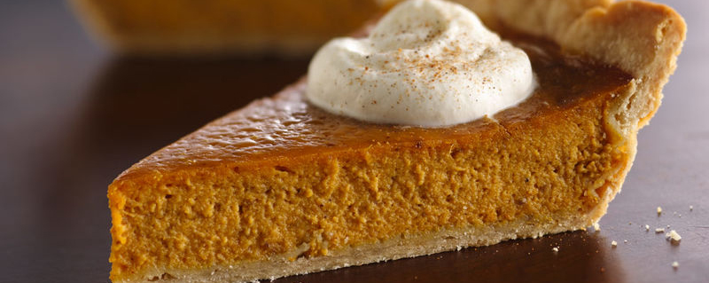

Panceta (Opcional)
Calabacín
Calabaza
Zanahoria
Vainas Picadas
Espinacas
Cebolla
Guindilla picante
Cebolla verde
Cebollino
Apio
Cilantro
Perejil
Hojas de Hierbabuena
Aceite de oliva
Sal
Pimienta
Orégano
Pica todos los vegetales en cubos medianos/pequeños. Las hierbas y espinacas trocéalas del tamaño que quieras. Pon en una olla a calentar dos cucharadas de aceite de oliva y procede a sofreír la cebolla y la panceta por un par de minutos. Agrega la zanahoria, apio, cebolla verde y la guindilla. Sigue revolviendo y agrega las vainas. Ahora le toca el turno a la calabaza y el calabacín. Agrega bastante agua. Aproximadamente de litro y medio a 2 litros. Condimenta con sal, pimienta y orégano. Deja cocinar por unos 20 minutos. Prueba que la calabaza, calabacín y zanahoria estén listos. De ser así, agrégale las hierbas: cilantro, perejil, hierbabuena y las espinacas. Revisa que esté bien de sal. Retira del fuego y sirve. Puedes agregarle queso parmesano, le da un toque de sabor bastante rico. El caldo de esta sopa de verduras es tan gustoso que puedes usarlo para saborizar otros platos, por ejemplo, para hacer risottos o salsas. ¡Listo... a disfrutar!
Harina de maíz
Canela en rama y en polvo
2 latas de leche de coco
1 panela de papelón
Azúcar
Sal
Para comenzar, extraemos la leche de coco (licuando el coco con agua caliente), luego lo colamos y queda la leche. Esa leche la cocinamos, añadimos la harina, la canela en rama, el azúcar y la sal; dicha mezcla la cocinamos a fuego medio durante 30 minutos, luego servimos en un molde cualquiera según su gusto, rociamos con canela en polvo y dejamos cuajar o a temperatura ambiente o en la nevera. ¡Listo... a disfrutar!
Masa de pan:
250 gr de leche entera
50 gr de mantequilla sin sal
50 gr de azúcar
25 gr de levadura fresca de panadería
500 gr de harina de fuerza
1 cucharadita de sal
Para el relleno:
35 gr de mantequilla
Jamón cocido
Aceitunas rellenas de pimiento rojo
Pasas
Además necesitaremos:
1 huevo o leche para pincelar
Para comenzar esta deliciosa receta, lo primero que debemos hacer es poner las pasas en remojo y las reservamos. A continuación, ponemos en un bol amplio la leche tibia en la que diluimos la levadura desmenuzada, añadimos la mantequilla (debe estar blanda) y el azúcar, mezclamos todo e incorporamos la harina, la sal y amasamos bien unos minutos hasta obtener una masa homogénea.
Luego, ponemos la leche, la mantequilla y el azúcar en el vaso y programamos 1 minuto a 37ºC en velocidad 2, añadimos la levadura desmenuzada y mezclamos 10 segundos en velocidad 2. Ponemos la harina y la sal y mezclamos 20 segundos en velocidad 6. Amasamos 3 minutos en velocidad espiga. Una vez que tenemos la masa lista, con la ayuda de un rodillo estiramos hasta formar un rectángulo, más o menos del tamaño de la bandeja del horno.
Pincelamos toda la superficie con la mantequilla fundida, cubrimos con las lonchas de jamón cocido, repartimos las aceitunas y las pasas (escurridas). Enrollamos, cerramos las puntas, remetiéndolas hacía dentro. Dejamos reposar, tapado y en un sitio cálido y alejado de corrientes de aire, hasta que doble su volumen. Pincelamos con suavidad la superficie con huevo batido, podéis sustituir el huevo por leche. Con un cuchillo hacemos unos cortes en diagonal. Horneamos unos 30 o 40 minutos a 180º C. ¡Y... Listo!
Pechuga grande de pollo o gallina
3 zanahorias
5 papas grandes
1 lata pequeña de guisantes
1 Manzana verde, si no tienes manzana puedes sustituir por uvas verdes.
Piña en almíbar enlatada y cortada en cuadritos (opcional)
Mayonesa (de 2 a 3 cucharadas grandes) Verificar si deseas agregarle más
Limón
Sal, pimienta y ajo en polvo al gusto
En una olla con agua suficiente, coloca un cubito de caldo de pollo, un tallo pequeño de ajo porro y la pechuga de pollo. Cocinar por una hora. Una vez listo, deja enfriar el pollo y mecharlo en trozos pequeños. Pelar, lavar y cortar en cuadritos las zanahorias y las papas. Poner a hervir en una olla primero la zanahoria, se espera unos minutos y luego se agrega las papas a fuego mediano hasta que ablanden y queden firmes pero que no se vuelvan puré. La manzana verde cortarla en cuadritos, también la piña si es que se añade. Aparte se une la mayonesa, la sal y las gotas de limón hasta crear una salsa. Mezclar los vegetales, frutas, guisantes y la mezcla de mayonesa con un movimiento envolvente para no romperlas. Tapar y colocar en la nevera por lo menos unas 2 o 3 horas. Si se desea sírvelo sobre hojas de lechuga. ¡Y listo... a disfrutar!
1/2 Kg. de canelones o macarrones gruesos, ligeramente cocidos y abiertos.
6 Tomates.
1 Cebolla.
3 Ajíes dulces.
2 Dientes de ajo.
6 Cucharadas de aceite vegetal.
2 Papas enteras y cocidas.
4 Huevos cocidos.
1/2 Kg. de queso semiduro rallado.
100 Grs. de queso duro rallado. (Queso de año)
4 Huevos crudos.
1 Taza de leche líquida.
1 Frasco pequeño de encurtidos en mostaza.
1 Lata grande de jamón endiablado.
1 Cucharada de onoto (achote) en polvo.
Sal y pimienta al gusto.
Se prepara una salsa sofriendo todas las verduras picadas en cuadritos, cuando esté el sofrito se le agrega el jamón endiablado y los encurtidos en mostaza y se deja cocinar por tres minutos. Se enmantequilla y enharina una bandeja refractaria y se van agregando capas de pasta, salsa, rodajas de papa y de huevo cocido, el queso semiduro y se baten los huevos crudos con la leche, la sal y la pimienta se va agregando poco a poco en cada capa (revolviendo siempre antes de verter). En la última capa se le agrega la salsa, el resto de la mezcla de leche y el queso duro para gratinar, se lleva al horno tapado con papel de aluminio hasta que la pasta se cocine y luego se gratina destapado hasta que dore. ¡Listo, a disfrutar!
200 gr. de harina
4 cdtas. de polvo de hornear
300 ml de agua
2 cdas. de aceite neutro
Cáscara de 1/2 limón rallada
2 plátanos maduros
Aceite para freír
Mezclar en un cuenco la harina y el polvo de hornear tamizados con sal y la cáscara de limón rallada. Agregar el agua y el aceite, todo de una vez, y mezcle bien con un batidor para que no se formen grumos. Se deberá obtener una masa espesa, capaz de velar una cuchara. Pelar los plátanos, cortarlos en rodajas de unos 2 cm y agregarlos a la masa, revolviendo suavemente para cubrirlos por completo. En una olla pequeña y profunda, calentar abundante aceite, llevándolo a 180 grados. Tome con una cuchara unas pocas rebanadas de plátanos a la vez y freírlas girándolas con una espumadera, para cocinarlas uniformemente. Cuando los buñuelos estén dorados, escurrirlos y dejarlos secar en un plato cubierto con papel de cocina. Servir los buñuelos de plátano y limón de inmediato, tal como están o espolvoreados con un poco de azúcar glas.
Para la masa:
300 gr. de harina
160 gr. de mantequilla
1 huevo y 1 yema
1 pizca de sal
Cáscara rallada de un limón
120 gr. de azúcar
Para el relleno:
130 gr. de azúcar
80 gr. de mantequilla
50 gr. de avellanas tostadas y picadas
3 naranjas
4 huevos
Preparar la masa: colocar la harina en la mesada de trabajo, realizar un hueco en el centro donde se incorporarán el azúcar, la ralladura de limón, la sal y la mantequilla blanda. Comenzar a amasar rápidamente, utilizando solo las yemas de los dedos. Añadir la yema de huevo y el huevo entero y terminar de trabajar. Cuando se obtenga una mezcla homogénea, envolverla en una hoja de papel film y dejarla reposar en el refrigerador durante una hora. Mientras tanto preparar el relleno. En un tazón romper los huevos, rallar por encima la cáscara de naranja, agregar el azúcar granulada y revolver para evitar los grumos. En una cacerola, derretir la mantequilla a baño María y cuando esté tibia, agregarla a los huevos y al azúcar. También agregar el jugo filtrado de 2 naranjas.
Retirar la masa de la nevera y extenderla con un rodillo. Engrasar un molde para tarta con un diámetro de 28 cm, espolvorear con harina y luego extender la masa. Pinchar el fondo con un tenedor, cubrir con las avellanas picadas y luego agregar la mezcla de naranja y huevo. Nivelar con una espátula y emparejar los bordes. Limpiar y pelar la tercera naranja, cortarla en rodajas finas y decorar la superficie de la tarta. Hornear a 180 grados durante 25-30 minutos y, cuando la tarta esté cocida, dejar enfriar antes de cortarla.
100 gr de harina
1 huevos
2 cucharadas de aceite de oliva virgen extra
1 pizca de sal
20 gr de espinacas
20 gr de queso
29 gr de puerro
6 gambas
150 ml de salsa de tomate
tabasco, soja, salsa inglesa (una cucharada)
3 hojas de albahaca
3 champiñones
Lavar y cortar los calabacines en trozos. En una sartén, poner el diente de ajo entero, para quitarlo antes de servir, y el aceite de oliva. Saltear el calabacín y añadir sal al final. Tomar otro calabacín y cortarlo en rebanadas finas, se puede usar un tallador de vegetales para hacer rizos. En una sartén anti-adherente, o en una plancha, grillarlos. Sazonar con aceite de oliva virgen extra, orégano, sal y una pizca de picante; retirar de la sartén y reservar.
Cocer la pasta en abundante agua salada. Escurrirla al dente, conservando el agua de cocción. Incorporar la pasta a los calabacines salteados junto con el queso blando, cúrcuma y una cucharada de agua de la cocción de la pasta. Amalgamar agregando un cucharón más de agua si fuera necesario. Terminar salteando la pasta con abundante parmesano rallado. Servir la pasta con calabacines junto con los calabacines grillados, un chorrito de aceite y pimienta molida.
400 gr. de calabaza
1 disco de masa de hojaldre
120 gr. de jamón cocido (en un trozo cortado en cubitos)
20 gr. de queso rallado
15 gr. de amaretti secos
1 huevo
Aceite de oliva v. e.
Sal
Pimienta
Cortar la pulpa de la calabaza en cubos y cocinarla en una sartén con 2-3 cucharadas de aceite y una pizca de sal, a fuego medio durante 2-3 minutos, luego agregar un vaso de agua y cocinar con la tapa durante otros 10 minutos. Mezclar la calabaza con el jamón cortado en cubitos, una generosa cantidad de pimienta recién molida picada, el queso parmesano y los amaretti desmenuzados. Sazonar con sal si es necesario. Forrar con el disco de hojaldre (diámetro 20 cm, altura 4 cm) un molde para tarta forrado con papel pergamino. Acomodar la mezcla de calabaza en el interior y volcar el sobrante de masa hacia adentro. Pincelar con huevo batido y hornear a 180 ° C durante 35-40 minutos. Retirar del horno, dejar enfriar y… ¡Listo, a disfrutar!
4 champiñones grandes.
1/2 cebolla picada.
50 gr. de tocino ahumado.
75 gr. de queso crema.
Queso Mozzarella en rodajas.
Queso rallado al gusto.
Sal y pimienta.
Primero precalienta el horno a 180ºC Quita el tallo a los champiñones y reserva un par de ellos. Limpia con un paño húmedo los champiñones sin mojarlos y colócalos boca abajo en una fuente de horno. Rocía aceite de oliva y hornea diez minutos. Para el relleno pica la cebolla y los tallos reservados, sofríe en una sartén unos minutos.Cuando esté listo, añade el tocino picado y mueve unos minutos más. Saca la mezcla de cebolla con tocino y añade el queso crema.Mezcla bien y rellena los champiñones. Pon una rodaja fina de mozzarella encima y un poquito de queso rallado. Gratina cinco minutos, espolvorea con perejil picado y sirve caliente.